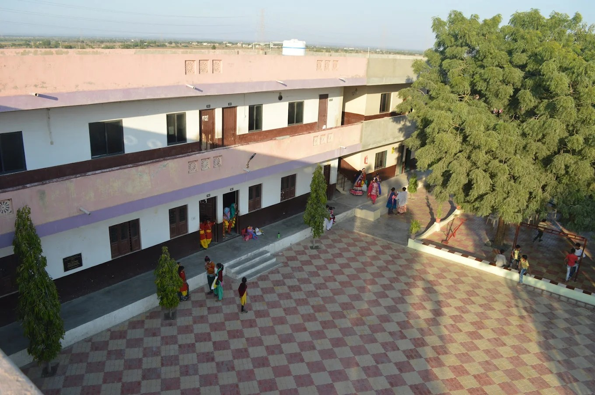
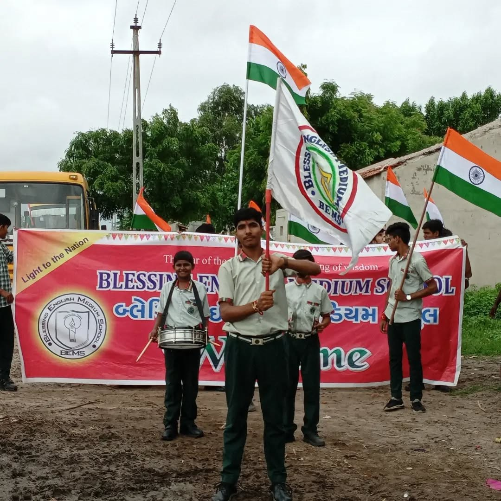

A Word From Principal Mrs. Betsy Blessen:
Welcome to Blessing School and Junior College of Commerce.
It gives me immense pleasure to welcome you to Blessing English Medium School. Our institution is committed to providing a nurturing environment that fosters academic excellence, character development, and holistic growth. We believe in empowering our students to become responsible global citizens while preserving their cultural roots.
Nestled in a serene rural setting, our School provides a peaceful atmosphere for learning and growth.
Founded in 2010 by a dedicated New Zealand couple, our school was born out of a passion to provide educational opportunities to village children. Today, we're proud to continue this legacy.
Our rural location offers a unique advantage - a calm and pollution-free environment that fosters focused learning and growth. We're committed to nurturing young minds, empowering them to reach their full potential.
A Word From Chairman Mr. Blessen Mathew Sam:
Blessing English Medium School has been a beacon of learning for 15 years, dedicated to uplifting the new generation in the grassroots of Kutch, Gujarat. Its core mission is to bring English education to village children who otherwise lack such opportunities.
The school believes that education is the key to remove darkness, enlightening souls, and brightening hearts, thereby preparing a generation for the future. Despite its location in an interior village, the School has made a significant and lasting impact on the community.
The school is committed to nurture a young generation that is free from taboos, superstitions, and social evils. While deeply rooted in cultural values and belief systems, the students are also encouraged to think freely and adapt to modern developments, science, and technology. This philosophy resonates with the proverb, "Train up the children in the way they should go, and even when they are old, they will not depart from it."
Our Facilities
- Bus Facility: In order to increase access to education, our school provides safe and reliable transportation services to students from 18 nearby villages. We operate buses each equipped with cameras and advanced safety features to ensure a secure commute. Our buses follow designated routes, providing convenient pick-up and drop-off services for students. With a focus on safety and comfort, our transportation services enable students to focus on their studies without worrying about daily commutes.
- Computer Lab: Students have access to a range of educational programs, apps, and tools that enhance their learning experience. The lab is designed to foster digital literacy, skills, and creativity, preparing students for success in an increasingly technology-driven world.
- Science Lab: The School has science lab to provide students with hands-on experience and enable students to conduct experiments, investigations, and projects that foster scientific inquiry, creativity, and critical thinking. Through hands-on activities, students develop a deeper understanding of complex concepts, build problem-solving skills, and prepare for future careers in science, technology, engineering.
- PlayGround:

School has spacious Playgrounds and equipment for various sports and activities. - Medical Room:
 Basic medical care and first aid.
Basic medical care and first aid. - Security Measures:  CCTV cameras, secure entry and exit points.
- Open Stage & Space:
For Events, performances, and presentations.
Our Achievements
- 100% Board Exam Pass Rate
- 25+ Interschool District and State Level Awards
- 10+ Students Qualified for competitive exams like NEET and Navodya Exam.